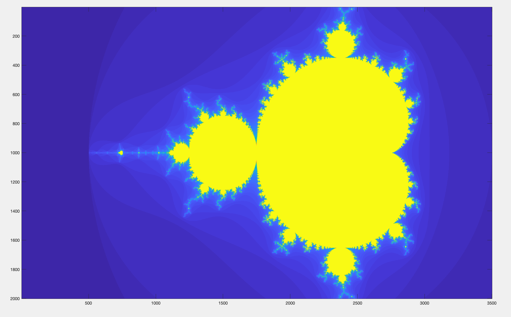

Mandelbrot Set
A script that produces a classic fractal.
Download Code [.m]
This is a Mandelbrot set my computer generated. The algorithm is known as the escape-time method. Basically, divide the desired range into a grid, and perform over each pixel in the grid: iterate the complex equation f(z) = z^2 + c and stop if the result grows bigger than 2. If it remains bounded, have a pre-defined escape time (ie. 10000 iterations) before moving to the next pixel. Record the iterations for each pixel, assign it to a color map, and voila the holy grail of fractals appears. Further exploration through different domains of the set can yield infinitely different possibilities.